find is the catalogue (where is the file?); grep reads the pages (which file has this text?).On a real server the number of files and folders grows quickly:
/home/ubuntu/
├── projects/
│ ├── website/
│ ├── app/
│ └── backup/
├── documents/
│ ├── reports/
│ └── notes/
└── downloads/
├── images/
└── files/After a while you forget where a particular file is, or which file contains a particular piece of information. When we say “search”, we can actually mean these two different things:
report.txt?”). Think: where is the file? → find.grep.find is the catalogue (where is the file?); grep reads the pages (which file has this text?).find. Know the text but not the file → grep.find · search for files and directoriesIf you know something about an item, such as its name, type, size, age or permissions, find can locate it. Take this structure:
/home/ubuntu/
├── documents/
│ ├── report.txt
│ └── notes.txt
├── projects/
│ ├── app/
│ │ └── config.txt
│ └── website/
└── backup/
└── report.txtTo locate report.txt by hand you would run ls /home/ubuntu/, ls /home/ubuntu/documents/, ls /home/ubuntu/projects/, ls /home/ubuntu/backup/… That gets painful fast. find walks the whole directory hierarchy for you.
So find exists to help you:
Goes into every subfolder below the starting point.
Prints the path of every file or directory that matches.
Name, type, size, time… and combinations of them.
the command: search for files and directories
[location]: where the search starts. . = the current directory
[condition]: what to test. -name = match on the name
the value for the condition: the file name (or pattern) to look for
If you want to find a file but don’t know exactly where it is, search from your current directory:
find: searches for files and directories
.: start searching from the current directory
-name: search based on the name
"file.txt": the file name we are looking for
Practical example. Suppose your home directory holds a project folder like this:
project/
├── file.txt
├── notes.txt
└── documents/
└── file.txt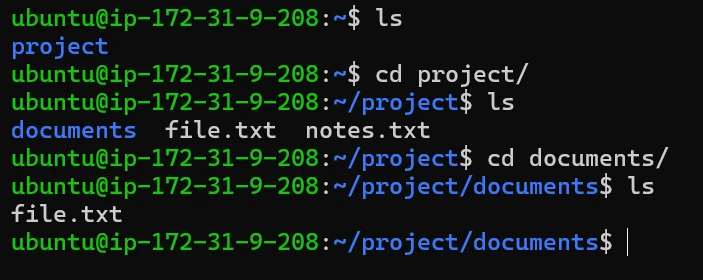
cd and ls: two copies of file.txt, one inside documents/.First, check where you are, then search:
pwd
find . -name "file.txt"pwd: you are in /home/ubuntu.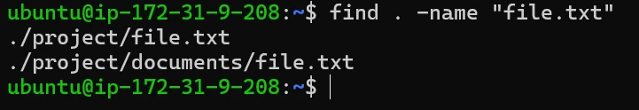
Here . stands for /home/ubuntu, so every result starts with ./ followed by the path below it: ./project/file.txt and ./project/documents/file.txt. Notice that find went inside documents/ on its own.
find checks every item at every level below the start and prints each match.Sometimes you don’t want one specific file but all files with a particular extension, for example every .txt file:
find . -name "*.txt" # * = anything, then .txt.: start from the current directory
"*.txt": file name pattern (anything + .txt)
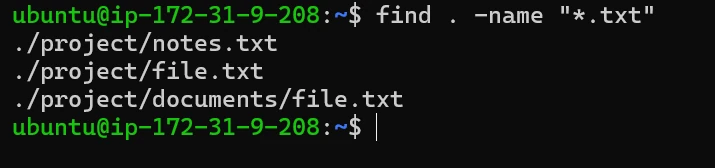
.txt, at any depth.The * wildcard means “any characters”, so the pattern matches every name ending in .txt below the current directory.
"*.txt" in quotes. Without them, the shell may expand *.txt to the files in the current folder before find even runs, and you get wrong results or an error.-inameLinux file names are case-sensitive: file.txt, File.txt and FILE.TXT are three different names. So find . -name "*.txt" normally matches lowercase .txt, but not .TXT. In this example the folder holds:
README.TXT
file.txt
report.txtfind . -name "*.txt"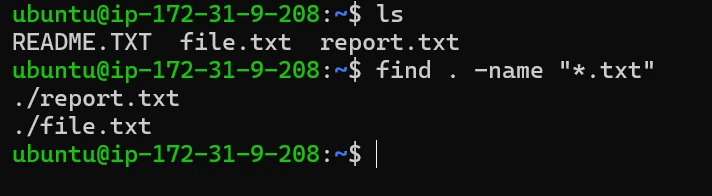
README.TXT is missing from the result.README.TXT is not matched because its extension uses uppercase letters.
If you don’t care about uppercase or lowercase, use -iname:
find . -iname "*.txt"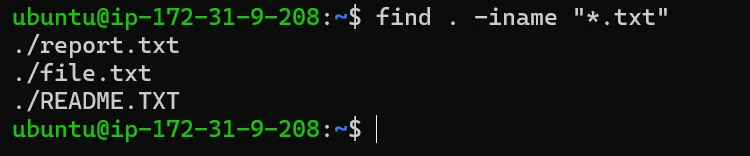
./README.TXT.-iname ignores upper and lower case.
-typeBy default find returns both files and directories. Sometimes you want files only. -type narrows it down:
.: start searching from the current directory
-type: what type of item to search for
f = regular file (use d for directory)
Practical example. Suppose you have:
project/
├── notes.txt
├── report.pdf
├── logs/
│ ├── app.log
│ └── error.log
└── documents/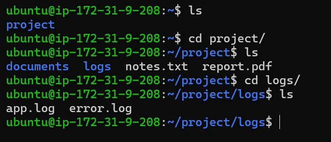
project folder used in this example.find . -type f # files only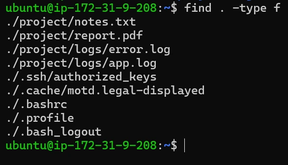
.bashrc, .profile…) show up too.Notice that directories such as ./project/logs and ./project/documents are not displayed. Because the search started in the home directory, hidden files such as ./.bashrc and ./.ssh/authorized_keys are listed as well: find does not skip names starting with a dot.
If you want to find directories only, use d (directory):
find . -type d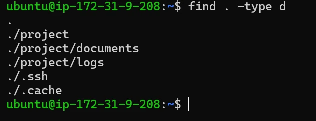
. itself.Even the starting point . is listed, because it is a directory too.
You can combine several conditions, and an item must pass all of them. Suppose you want only files whose names end with .log:
start from the current directory
condition 1: -type f → must be a file
condition 2: -name "*.log" → its name must end with .log
Practical example. Suppose you have:
project/
├── notes.txt
├── app.log
├── report.pdf
└── logs/
├── server.log
└── error.log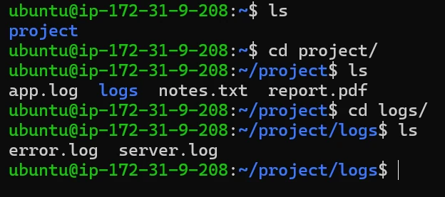
find . -type f -name "*.log"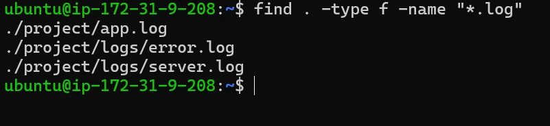
.log. The logs folder itself is not listed.find can also test how big a file is and, using the file’s timestamps, when it was last changed. A + means “more than”, a - means “less than”.
| Command | Finds |
|---|---|
find . -size +10M | files larger than 10 MB (units: k, M, G) |
find . -mtime -1 | files modified within the last day (24 hours) |
find . -mmin -30 | files modified within the last 30 minutes |
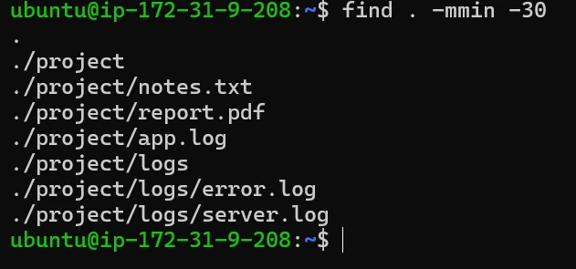
-mmin -30: everything just created for this lesson, folders included (add -type f for files only).find / -type f -size +500M 2>/dev/null lists the giant files, and find /var/log -mmin -30 shows which logs are being written right now, i.e. where to look first after an incident.grep · search inside filesSuppose you have a large log file, app.log, with 10,000 lines (Line 1, Line 2 … Line 5000 … Line 10000), and you want the ones mentioning ERROR. Reading all 10,000 lines manually would take a lot of time. Instead:
grep "ERROR" app.loggrep searches through the file and displays the lines containing the matching text.
the text (or pattern) to search for
the file to search in
Suppose you have a configuration file, config.txt, with this content:
server=web01
port=8080
server=database01
timeout=30You want to find the lines containing server:
grep "server" config.txt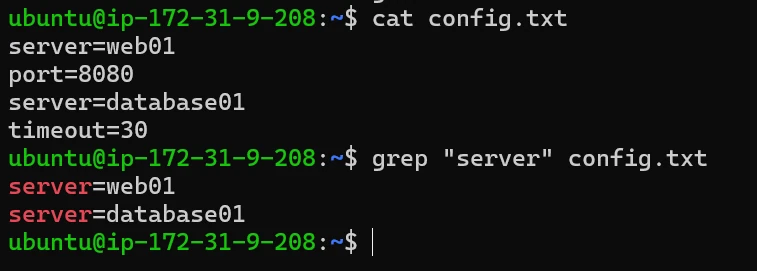
config.txt and displayed the two matching lines.Suppose app.log contains:
INFO: Server started
ERROR: Database failed
INFO: User logged in
ERROR: Connection timeoutgrep "ERROR" app.log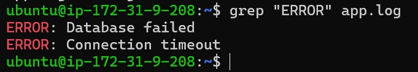
-iLike file names, grep is case-sensitive by default. Suppose app.log now also contains these lines (added below the four from before):
Server started
server stopped
SERVER restartedgrep "server" app.log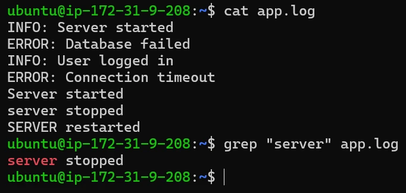
server stopped matches.To ignore case, use -i:
grep -i "server" app.log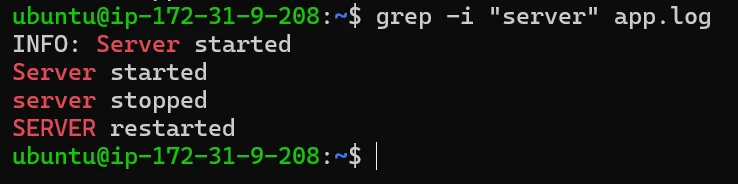
INFO: Server started from the first part of the file.-nBy default, grep shows the matching lines but does not show their line numbers:
grep "ERROR" app.log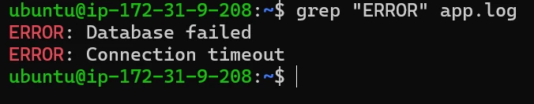
Sometimes you also want to know where in the file the error appears. Use the -n option (show line numbers):
grep -n "ERROR" app.log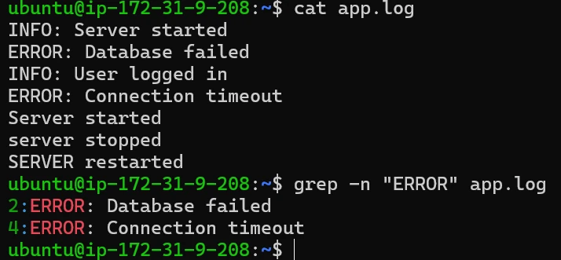
grep can search more than one file at a time. To find ERROR in both app.log and server.log:
grep "ERROR" app.log server.logPractical example. app.log contains the seven lines from above, and another file, server.log, contains three lines:
INFO: Server started
ERROR: Database failed
INFO: User logged in
ERROR: Connection timeout
Server started
server stopped
SERVER restartedINFO Server running
ERROR Server unavailable
INFO Server restarted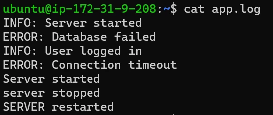
app.log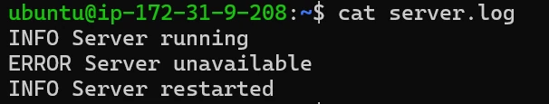
server.logSearch ERROR in both files, then search multiple files and show line numbers:
grep "ERROR" app.log server.log
grep -n "ERROR" app.log server.log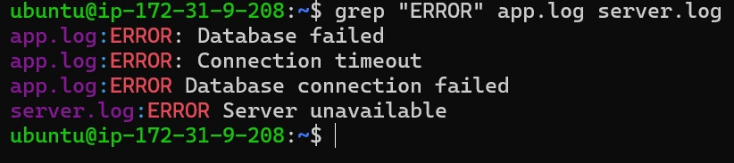
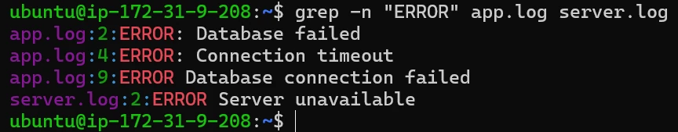
-n: file name, then line number, then the line.With more than one file, grep puts the file name in front of each match (and the line number after it, with -n). By the time these two screenshots were taken, one more line, ERROR Database connection failed, had been appended to app.log as line 9, which is why app.log shows three matches.
grep -rSometimes you have many files spread across several directories:
project/
├── logs/
│ ├── app.log
│ └── server.log
├── backup/
│ └── old.log
└── config/
└── settings.txtYou want to find ERROR in all relevant files under the project. Instead of specifying every file individually, use -r (recursive): grep searches every file in a directory and all its subdirectories.
grep -r "ERROR" . # search everything under the current directoryPractical example: build a small project
mkdir -p grep-recursive/logs/app grep-recursive/logs/server grep-recursive/config
cd grep-recursive
# create files with some content
echo "INFO Application started" > logs/app/app.log
echo "ERROR Database connection failed" >> logs/app/app.log
# create a server file with some content
echo "INFO Server started" > logs/server/server.log
echo "ERROR Server unavailable" >> logs/server/server.log
# create a configuration file
echo "port=8080" > config/settings.txtNow the structure looks like this. Check the files with find:
grep-recursive/
├── logs/
│ ├── app/
│ │ └── app.log
│ └── server/
│ └── server.log
└── config/
└── settings.txtfind . -type f # check the files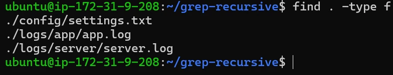
Now ask: which files contain ERROR?
grep -r "ERROR" .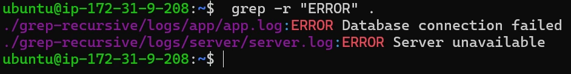
In the screenshot the command was run from the home directory (~), so the paths start with ./grep-recursive/. Run inside grep-recursive, they would start with ./logs/…. settings.txt was searched too, but it has no match, so it doesn’t appear.
-l to print only the names of matching files: grep -rl "ERROR" .-v, -c, -wFor the first two, imagine an app.log file tracking these events:
INFO: Application started.
INFO: User logged in.
ERROR: Database connection failed.
INFO: Loading dashboard.
ERROR: Image failed to load.-vNormally grep shows lines that contain the word. Inverting the search tells grep to do the exact opposite: “show me every line that does NOT have this word.” You are basically using grep as a filter to hide things you don’t want to see. Just add -v: grep -v "ERROR" app.log.
The normal search. If you want to see only the problems:
grep "ERROR" app.log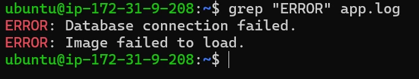
The inverted search (-v).
grep -v "ERROR" app.log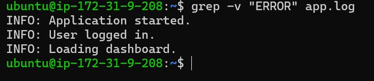
-cNormally grep prints all the lines it finds. But sometimes you don’t care what the lines say, only how many there are. Adding -c tells grep to give you just a total. To know how many errors happened:
grep -c "ERROR" app.log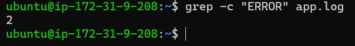
-c counts matching lines; a line with ERROR twice still counts once.
-wBy default grep looks for the sequence of letters anywhere, so cat also matches category and dedicate. -w only matches the exact, standalone word, with spaces or punctuation around it. Imagine a file called notes.txt:
The system threw an error today.
Please fix the errors in the code.
The movie was an absolute terror.A normal search for error:
grep "error" notes.txt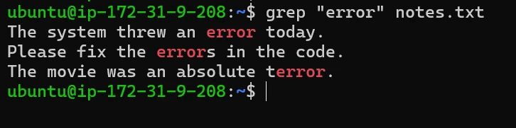
It found all three, because they all contain the letters e-r-r-o-r. Now use -w to strictly find the whole word:
grep -w "error" notes.txt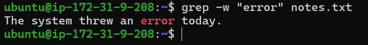
find vs grepfind | grep | |
|---|---|---|
| Looks at | names and properties of files/folders | the text inside files |
| Question | “Where is it?” | “Which file / line has it?” |
| Prints | paths | matching lines |
| Case-insensitive | -iname | -i |
| Goes into subfolders | always | with -r |
| grep option | Meaning |
|---|---|
-i | ignore case |
-n | show line numbers |
-r | search directories recursively |
-v | invert: lines that do NOT match |
-c | count matching lines |
-w | whole word only |
grep -rin "timeout" /etc/app searches recursively, ignoring case, and shows line numbers, all at once."*.log". Quote it in find so the shell doesn’t expand it first.Pick an answer. You’ll see right away whether it’s correct and why.
You remember a file is called deploy.sh but not where it is. Which tool?
grepcatfindheadYou know the name, not the location: that is a job for find.
Which command lists only directories under the current folder?
find . -type dfind . -type ffind . -name dgrep -r . -d-type d keeps directories; -type f keeps regular files.
find . -name "*.txt" does not list README.TXT. Why?
Use -iname to ignore case.
What does grep "ERROR" app.log print?
grep returns whole matching lines. -c would count, -l would list file names.
You want every line of a log except the DEBUG lines. Which command?
grep -c "DEBUG" app.loggrep -w "DEBUG" app.loggrep -v "DEBUG" app.loggrep -i "DEBUG" app.log-v inverts the match and shows lines that don’t contain the pattern.
Which finds ERROR in every file under the current folder, including subfolders?
grep -r "ERROR" .grep "ERROR"find . -name "ERROR"grep -n "ERROR" .-r makes grep descend into directories. find -name matches file names, not content.
A file has the lines “error”, “errors” and “terror”. How many does grep -w "error" match?
-w matches only the standalone word; “errors” and “terror” contain it as part of a longer word.
Which finds files modified in the last 30 minutes?
find . -mtime -30find . -mmin -30find . -size -30grep -c 30 .-mmin works in minutes; -mtime works in days.
find answers “where is the file?” by walking the directory tree with conditions like name, type, size and time, and grep answers “which lines contain this text?”, with -i, -n, -r, -v, -c, -w to sharpen the search.
— Vishwa Mohan